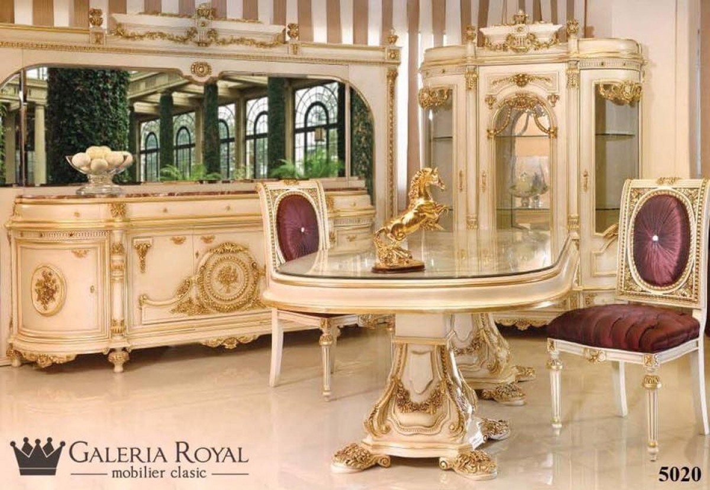

Scaune Sufragerie – ResetarM – Producator Mobilier
 Home Mobilier Bucatarie Bucătărie Roma NEW Bucatarie Emma Bucatarie Maria Bucatarie Maria Crem Camera de zi Seturi Camera de zi Masute si Console Canapele Fotolii si Demi-fotolii Comode si Plasme TV Sufragerie Seturi Sufragerie Mese Scaune Bufete, Comode si Vitrine Pendule Dormitor Seturi Dormitoare Comode si Toalete Dulapuri Paturi si Noptiere Birou Seturi birou Mese birou Scaune birou Biblioteci Colectii Colectia Maria Colectia Sofia Colectia Donatello Colectia Prestige Colectia Princessa Diverse Seturi Bai Mobilier Hol Seminee Comenzi speciale Portofoliu Showroom Cluj-Napoca Contact Home Mobilier Bucatarie Bucătărie Roma NEW Bucatarie Emma Bucatarie Maria Bucatarie Maria Crem Camera de zi Seturi Camera de zi Masute si Console Canapele Fotolii si Demi-fotolii Comode si Plasme TV Sufragerie Seturi Sufragerie Mese Scaune Bufete, Comode si Vitrine Pendule Dormitor Seturi Dormitoare Comode si Toalete Dulapuri Paturi si Noptiere Birou Seturi birou Mese birou Scaune birou Biblioteci Colectii Colectia Maria Colectia Sofia Colectia Donatello Colectia Prestige Colectia Princessa Diverse Seturi Bai Mobilier Hol Seminee Comenzi speciale Portofoliu Showroom Cluj-Napoca Contact Home Mobilier Bucatarie Bucătărie Roma NEW Bucatarie Emma Bucatarie Maria Bucatarie Maria Crem Camera de zi Seturi Camera de zi Masute si Console Canapele Fotolii si Demi-fotolii Comode si Plasme TV Sufragerie Seturi Sufragerie Mese Scaune Bufete, Comode si Vitrine Pendule Dormitor Seturi Dormitoare Comode si Toalete Dulapuri Paturi si Noptiere Birou Seturi birou Mese birou Scaune birou Biblioteci Colectii Colectia Maria Colectia Sofia Colectia Donatello Colectia Prestige Colectia Princessa Diverse Seturi Bai Mobilier Hol Seminee Comenzi speciale Portofoliu Showroom Cluj-Napoca Contact Home / Mobilier / Sufragerie / Scaune SufragerieSCAUNE SUFRAGERIE
Scaun Victoria
Scaune, Sufragerie VictoriaDemi Fotoliu Filippo con Foglia
Camera de zi, Fotolii si Demi-fotolii, Scaune, SufragerieTaburet Sgabello
Scaune, SufragerieScaun Veneziana Eco cu Brate
Scaune, SufragerieScaun Veneziana Eco
Scaune, SufragerieScaun Veneziana cu Brate
Scaune, SufragerieScaun Veneziana
Scaune, SufragerieScaun Traforata cu Brate
Scaune, SufragerieScaun Traforata
Scaune, SufragerieScaun Ovalina cu Brate
Scaune, SufragerieScaun Ovalina
Scaune, SufragerieBANCUTA PANCHETTA 700
BANCUTE, Scaune, SufragerieScaun Traforata Doppia Cresta cu manere
Scaune, SufragerieScaun Traforata Doppia Cresta
Scaune, SufragerieScaun Luigi XVI Intagliata cu manere
Scaune, SufragerieScaun Luigi XVI Intagliata
Scaune, SufragerieScaun Luigi XVI cu brate
Scaune, SufragerieScaun Luigi XVI
Scaune, SufragerieScaun cu brate si Spatar Tapitat Sofia
Scaune, Sufragerie, Sufragerie SofiaScaun Sofia cu Spatar Lira
Scaune, Sufragerie, Sufragerie SofiaScaun Donatello Lux
Scaune, SufragerieScaun Donatello Lux cu brate
Scaune, SufragerieScaun cu brate si Spatar Lira Sofia
Scaune, Sufragerie, Sufragerie SofiaScaun Sofia cu Spatar Tapitat
Scaune, Sufragerie, Sufragerie SofiaScaun cu brate Prestige
Scaune, Sufragerie, Sufragerie PrestigeScaun Prestige
Scaune, Sufragerie, Sufragerie PrestigeScaun Maria spatar cu lira
Scaune, Sufragerie, Sufragerie MariaScaun Maria spatar tapitat
Scaune, Sufragerie, Sufragerie Maria© 1992 - 2014 Resetar M producator mobilier clasic. Toate drepturile rezervate.
Protectia Consumatorului Termeni si conditii